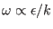

Next: The algebraic k-equation (Source Up: Fortran: Module Interface turbulence: Previous: The dynamic epsilon-equation (Source Contents
INTERFACE:
subroutine genericeq(nlev,dt,u_taus,u_taub,z0s,z0b,h,NN,SS)DESCRIPTION:
This model has been formulated by Umlauf and Burchard (2003), who introduced a `generic' variable,
|
The transport equation for can written as
For horizontally homogeneous flows, the transport terms appearing in (166) are expressed by a simple gradient formulation,
For appropriate choices of the parameters, most of the classic transport
equations can be directly recovered from the generic equation (166).
An example is the transport equation for the inverse turbulent time scale,
, which has been formulated by Wilcox (1988)
and extended to buoyancy affected flows by Umlauf et al. (2003). The precise
definition of  follows from table 8, and its transport
equation can be written as
follows from table 8, and its transport
equation can be written as
|
USES:
use turbulence, only: P,B,num
use turbulence, only: tke,tkeo,k_min,eps,eps_min,L
use turbulence, only: cpsi1,cpsi2,cpsi3plus,cpsi3minus,sig_psi
use turbulence, only: gen_m,gen_n,gen_p
use turbulence, only: cm0,cde,galp,length_lim
use turbulence, only: psi_bc, psi_ubc, psi_lbc, ubc_type, lbc_type
use util, only: Dirichlet,Neumann
IMPLICIT NONE
INPUT PARAMETERS:
number of vertical layers
integer, intent(in) :: nlev
time step (s)
REALTYPE, intent(in) :: dt
surface and bottom
friction velocity (m/s)
REALTYPE, intent(in) :: u_taus,u_taub
surface and bottom
roughness length (m)
REALTYPE, intent(in) :: z0s,z0b
layer thickness (m)
REALTYPE, intent(in) :: h(0:nlev)
square of shear and buoyancy
frequency (1/s^2)
REALTYPE, intent(in) :: NN(0:nlev),SS(0:nlev)
REVISION HISTORY:
Original author(s): Lars Umlauf and Hans Burchard
$Log: genericeq.F90,v $
Revision 1.9 2005-12-28 08:51:10 hb
Bug fix: Now tkeo is used for reconstruction of psi
Revision 1.8 2005-11-15 11:35:02 lars
documentation finish for print
Revision 1.7 2005/11/03 20:53:37 hb
Patankar trick reverted to older versions for
stabilising 3D computations
Revision 1.6 2005/08/11 13:11:50 lars
Added explicit loops for diffusivities for 3-D z-level support.
Thanks to Vicente Fernandez.
Revision 1.5 2005/06/27 13:44:07 kbk
modified + removed traling blanks
Revision 1.4 2003/03/28 09:20:35 kbk
added new copyright to files
Revision 1.3 2003/03/10 09:02:05 gotm
Added new Generic Turbulence Model +
improved documentation and cleaned up code
Karsten Bolding 2012-01-24